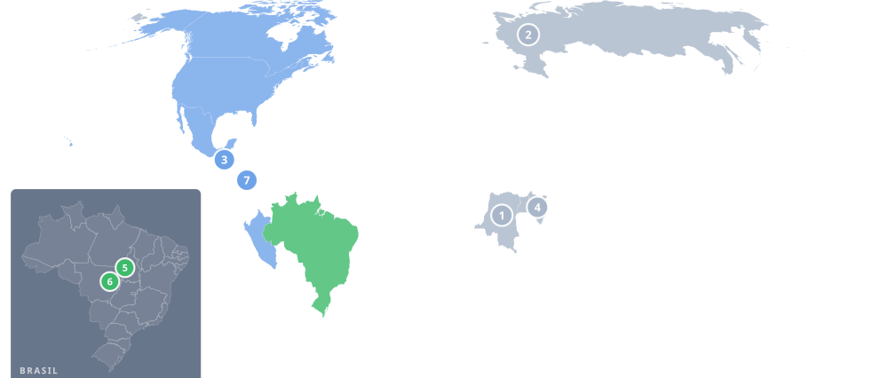

A primeira edição do clipping será gerada automaticamente no domingo, ao fim da semana epidemiológica em curso. Enquanto isso, o feed abaixo é atualizado todos os dias com as publicações das fontes oficiais.

Últimos 90 dias | atualizado em 15 de outubro de 2026
Clipping semanal por semana epidemiológica
Nenhuma edição publicada ainda.